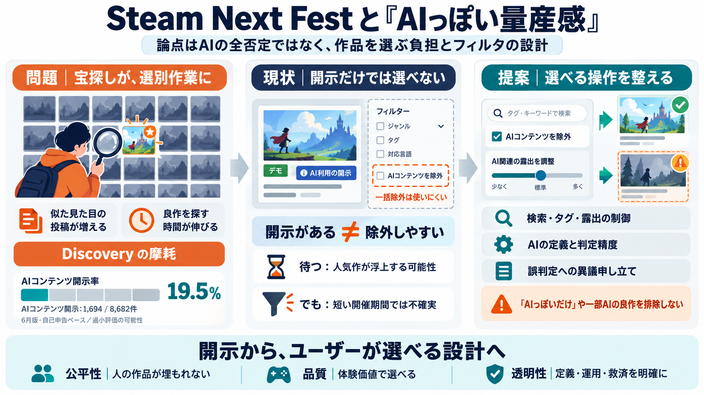

Steam Next Fest Seems to Have a Lot of AI-Produced Games and Fans Are Upset
> Steam Next Fest got absolutely ruined by AI > by u/Shogo-MAD in Steam Steam already has a robust tagging system, s…

Steam Next Fest（体験版デモの祭典）で、生成AI由来に見える作品が目立ち、ユーザーが「除外フィルタ」を求めている——という論点です。
不満の中心は「AI作品への嫌悪」よりも、“面白い人の作品と出会う”はずが、選別の手間が増えて体験が崩れる点にあります。
Next Festは本来“宝探し”ですが、目立つ（それっぽい）素材が増えると、探索時間だけが伸びます。
SteamにはタグやAI利用の申告（開示）の仕組みがありますが、ユーザーが「まとめて弾く」ための検索・フィルタが直感的に機能していない、という見立てです。
6月版Next Festでは、参加8682件のうち「AIコンテンツの開示」が1694件で19.5%と紹介されています（自己申告のため過小評価の可能性あり）。
記事は、AI画像（やプロンプト前提の見た目）が“投稿障壁”を下げ、短期間に大量の見栄え改善が起きて目立つ可能性を示唆します。
新着が多い間は混ざるが、後から人気デモが上がって淘汰される可能性がある一方、イベント期間が短いと開始直後の行動が影響し続けます。
記事と議論の核心は、AI利用そのものの是非というより「公平性（人の作品が埋もれない）」「品質」「透明な運用（定義と精度）」のバランスです。
フィルタは有効になり得ますが、定義の曖昧さ・誤判定・一部利用の扱いなどで、二次被害（良作の排除）が起きるリスクがあります。
今後は「AIを開示する」だけでなく、ユーザーが検索・フィルタ・露出制御で選びやすくなるよう、運用設計まで更新する必要があります。
> Steam Next Fest got absolutely ruined by AI > by u/Shogo-MAD in Steam Steam already has a robust tagging system, s…
The Godot Foundation announced policy updates banning nearly all AI-generated code contributions to the open-source game…
The one thing that would solve all of this debacle would be a simple yet meaningful way to filter out games that use gen…
## The Solution! An Open Source Google Chrome and Firefox extension, aptly named "AI warning for Steam" renders a full …
and all content is reviewed and edited by a human before the game (or demo) reaches the player. But as we’ve seen time a…